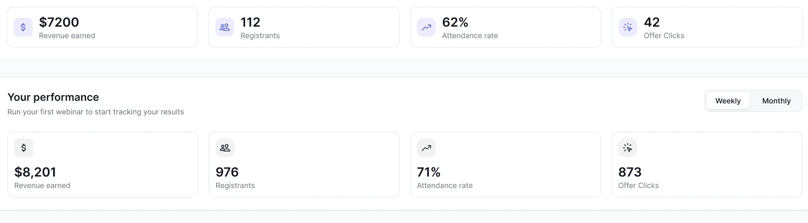

Connecting the many tasks behind a webinar into one coherent journey.
For a host, delivering a webinar means coordinating content, schedules, audience engagement, communications, and replay. My design challenge was to make this breadth navigable without reducing the product’s capabilities.
I organized the experience around two levels: a workspace for managing webinars and a focused environment for configuring each event.
A host returns to a scheduled webinar and needs to check the session time, registration setup, and presenter team before entering the room.
Design response: I brought those details into the webinar overview, with related configuration grouped into event-level tabs. The host can review the event and move directly to the next task.
The complete webinar overview brings scheduling, registration, and the presenter team into one workspace.
Scenario reconstructed from the interface to explain the design rationale; not a reported research finding.
This journey is reconstructed from the final interface structure. It shows how the product connects the work, rather than claiming to be an original research artifact.
Choose a webinar format and establish the event.
Shape pages, content, schedules, and presenters.
Set up calls to action and communications.
Return to performance and replay settings.
The collection provides a recognizable return point across event formats.
I gave the individual webinar a dedicated overview. Summary information helps the host re-establish context before moving into detailed configuration.
Tradeoff: more configuration areas remain visible in the event navigation. Grouping by task keeps that depth structured.
Page previews provide visual recognition across the registration, confirmation, and waiting experience. Supporting content is grouped beneath, so the page sequence remains the first point of attention.
For engagement and notifications, I used repeated rows instead of independent control groups. Alignment makes timing, state, and actions easier to compare across items.
Row actions sit beside the item they affect; the add action operates at the list level.
White and pale neutral backgrounds keep configuration labels and controls more prominent than decoration.
Neutral sans-serif typography
Exact family requires the source design file.
Violet identifies interactive emphasis and selection. The dark navigation creates a stable edge; neutral surfaces leave room for dense product content.
Palette values are sampled or visually approximated from screenshots. Typography and component specimens reconstruct the visible system; they are not an export of the original Figma tokens.
Metric cards share alignment and proportion, with a prominent value above its supporting label. Repetition gives the dashboard a consistent reading rhythm.

A shared navigation structure, recognizable page patterns, and event-level configuration connect the selected management workflows.
Final interfaces are shown here. Usability results, iteration records, and post-release metrics have not yet been supplied, so no performance improvement is claimed.
To complete the historical journey: add the original research insights, early wireframes, rejected directions, team responsibilities, and the iterations that led to these screens.
From the first event to the details behind it—a selection of the work across EasyWebinar.
A home for every event
Create, resume, and review
Shape the complete event experience
Manage the next audience action
Keep event communications connected
A structured view of registrants
Connect the wider workflow
Keep reusable assets within reach
Select any screen to view it at a larger size.